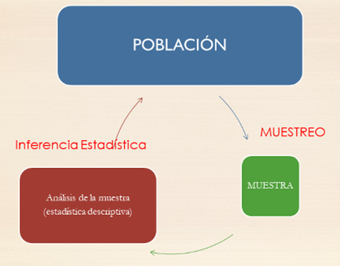

| Nombre | Altura | Hermanos | Cabello | Refrescos semanales | Satisfacción App | |
|---|---|---|---|---|---|---|
| 1 | Marta | 135 | 2 | rubio | 2-3 | 4 |
| 2 | Laura | 132 | 1 | negro | 2-3 | 4 |
| 3 | Xavier | 138 | 0 | negro | 0-1 | 3 |
| 4 | Joan | 141 | 3 | castaño | 4-5 | 2 |
| 5 | Maria | 134 | 2 | rojo | 0-1 | 3 |
| 6 | Maria | 136 | 1 | castaño | 6 o más | 5 |
2 Introducción al Análisis de Datos
2.1 La estadística y el método científico
La ciencia avanza definiendo teorías que intentan explicar el mundo.
La comunidad científica elabora teorías/hipótesis que intentan explicar hechos que ocurren. Una hipótesis es científica si existe alguna manera de comprobar su veracidad.
Podemos diseñar experimentos para comprobar si se cumplen las afirmaciones de la teoría.
Como la naturaleza tiene un comportamiento con “incertidumbre”, es decir, que si repetimos el experimento se obtienen resultados similares pero no idénticos, la estadística permite analizar estos resultados y ver si las desviaciones de la teoría son razonables o no.
Se ha definido estadística de muchas maneras. La que más nos gusta, y que está relaciona con la situación que acabamos de explicar, es que:
La estadística es la ciencia que permite adquirir conocimiento generalizable a partir de datos.
La estadística ayuda en todas las fases del método científico:
Planteamiento del problema: Diseño de experimentos y encuestas, determinación del tamaño de la muestra y métodos de muestreo adecuados para garantizar que los datos recopilados sean representativos de la población objetivo.
Recopilación de datos: Proporciona herramientas para recopilar y organizar datos relevantes sobre el problema.
Análisis de datos: Aplicación de técnicas descriptivas (Análisis explorartorio de datos), así como técnicas inferenciales (contrastes de hipótesis, ajustes de modelos,etc) para sacar conclusiones sobre la población en función de la muestra recopilada.
Interpretación de resultados: Ayuda a los científicos a determinar si los resultados son estadísticamente significativos y si las conclusiones se pueden generalizar a la población más amplia.
Comunicación de hallazgos: La estadística se usa para comunicar los resultados de manera efectiva a través de gráficos, tablas y tests estadísticos. Esto es esencial para que otros investigadores puedan comprender y evaluar los resultados.
Reproducibilidad: Proporciona métodos estadísticos claros y transparentes, se permite que otros repitan los experimentos y análisis para verificar la validez de los hallazgos.
Toma de decisiones: En muchos campos científicos, los resultados estadísticos se utilizan para tomar decisiones importantes. Por ejemplo, en la medicina, la estadística se usa para evaluar la eficacia de tratamientos y tomar decisiones sobre su uso en la práctica clínica.
Cuando alguien realiza un nuevo descubrimiento lo envía a una revisión por pares de la comunidad científica. Para que estos acepten el descubrimiento y pase a formar parte del conocimiento científico debes poner a disposición:
Los datos brutos (raw data) junto con el modelo de datos.
El código parametrizado y con las líneas más importantes comentadas.
La documentación (artículo/ reporte) donde se interpretan y presentan los resultados más relevantes.
En resumen, la estadística es una herramienta esencial que ayuda a garantizar que la investigación científica sea rigurosa, confiable y basada en evidencia sólida.
2.2 Gestión básica de datos
En estadística, siempre se empieza obteniendo unos datos sobre un grupo (relativamente pequeño) de individuos de una población. Bueno, en realidad, no se empieza obteniendo los datos, sino planificando cuidadosamente cómo se van a obtener, pero todo forma parte de la “obtención” de los datos.
Se generaliza la información que se ha obtenido sobre este grupo de personas al total de la población.
Y no se trata de trucos de magia adivinatoria, sino de una ciencia cuya metodología ha sido validada por medio de demostraciones matemáticas o, en el peor de los casos, mediante simulaciones numéricas (el equivalente en matemáticas de los experimentos en las otras ciencias).
Así pues, la situación de partida a la hora de aplicar técnicas estadísticas es que disponemos de un conjunto de datos que describen algunas características de un grupo de individuos. El análisis estadístico de estos datos puede ser entonces de dos tipos básicos:
Análisis exploratorio de datos, cuando nuestro objetivo sea simplemente resumir, representar y explicar los datos concretos de los que disponemos. La estadística descriptiva es el conjunto de técnicas que se usan con este fin.
Análisis inferencial, si nuestro objetivo es deducir (inferir), a partir de estos datos, información significativa sobre el total de la población de interés. Las técnicas que se usan en este caso forman la estadística inferencial.

Ambos tipos de análisis están relacionados. Por un lado, porque es conveniente (obligatorio, en nuestra opinión) empezar cualquier análisis inferencial dando un vistazo a los datos que se usarán.
Por otro, porque muchas técnicas descriptivas permiten estimar propiedades de la población de la que se ha extraído la muestra. Por citar un ejemplo, la media aritmética de las alturas de un grupo de individuos nos da un valor más o menos representativo de sus alturas, pero también sirve para estimar la altura media de los individuos de la población total.
La estadística inferencial entra en juego cuando se quiere obtener información sobre una población y no se puede acceder a todos sus integrantes. Si por ejemplo queremos conocer la altura media de los estudiantes matriculados en esta asignatura de la UIB en este curso, en principio no necesitamos para nada la estadística inferencial. Sois pocos, os mediríamos a todos y calcularíamos la media. En todo caso, usaríamos técnicas de estadística descriptiva para arropar este valor representando la distribución de vuestras alturas de manera adecuada.
Pero si quisiéramos conocer la altura media de los mallorquines entre 18 y 25 años, sería muy complicado medirlos a todos. Entonces, lo que haríamos sería tomar una muestra representativa de esta población, medirlos y a partir de sus alturas estimar dicha altura media. Naturalmente, lo más seguro es que de esta manera no obtuviéramos el valor exacto de la altura media de los mallorquines de 18 años, nos tendríamos que conformar con obtener una aproximación dentro de un cierto margen de error y determinar la probabilidad de acertar con nuestra estimación y este margen de error. La estadística inferencial es la que nos permite acotar el error que podamos haber cometido y calcular la probabilidad de cometerlo, incluyendo la metodología que tendríamos que haber usado para tomar la muestra en primer lugar.
2.3 R/ RStudio - Posit / RMarkdowm - Quarto
Todas las técnicas que usaremos en la asignatura pueden ser implementadas y/o desarrolladas en software libre como Python y R. Ambos se consideran lenguajes de programación esenciales para la ciencia de datos. Lo ideal sería dominar ambos para tener una base de programación completa, pero:
R es un lenguaje específico utilizado para el análisis de datos y la estadística.
R es muy adecuado para un sub-campo del aprendizaje automático conocido como aprendizaje estadístico. Cualquier persona con una formación formal en estadística debería reconocer la sintaxis y la construcción de R.
Al igual que Python, R cuenta con una sólida comunidad, estructurada alrededor de la “Comprehensive R Archive Network”, o CRAN, pero no ofrece un desarrollo de software de propósito general como Python.
Cada día salen nuevos paquetes que extienden las funcionalidades de R y cubren casi todas las necesidades computacionales y estadísticas de un científico. Para que os hagáis una idea, en el momento de revisar estas notas (septiembre de 2023) el número de paquetes en el repositorio de la CRAN acaba de superar los 19800.
El acceso a R se proporciona a través de RStudio, entorno que presenta una ventana de visualización, un explorador de archivos, un visor de datos y un editor. Este entorno suele ser menos intimidante que el shell de R. Además, cuenta con ayuda integrada, resaltado de sintaxis y completado contextual por tabulaciones; todas estas herramientas facilitan el trabajo.
RStudio tiene un nuevo nombre desde julio de 2022: Posit. Posit es una palabra que significa proponer una idea para su discusión, proviene de la aspiración científica de construir niveles cada vez mayores de conocimiento y comprensión de experimentos que generan

2.4 Los datos y sus tipos
En vuestro curso de Estadística estudiasteis algunas técnicas básicas de estadística descriptiva. Estas técnicas consisten en una serie de valores y gráficos que nos permiten resumir y explorar un conjunto de datos, con el objetivo final de entenderlos o describirlos lo mejor posible.
Los datos de los que disponemos suelen ser multidimensionales, en el sentido de que observamos varias características (variables) de una serie de individuos. Almacenamos estos datos en tablas de datos como la que presentamos abajo, donde cada columna corresponde a una variable y cada fila son los datos de un individuo concreto. Así, en esta tabla, cada fila representa un niño y cada columna recoge una de las características que hemos anotado: su nombre, su altura (en cm), su número de hermanos, el color de sus cabellos, el número semanal de refrescos que suele tomar, y su grado de satisfacción con un juego para móvil (entre 0 y 5).
Precaución
En este curso vamos a “sobrecargar” el término variable, en el sentido de que tendrá dos significados diferentes que esperamos que podáis distinguir según el contexto:
Por un lado, llamaremos variable a una característica que puede tomar diferentes valores sobre diferentes individuos; cuando tenga este sentido, a veces le añadiremos el adjetivo poblacional. Por ejemplo, la altura de las personas (de todo el mundo, de un país, de una ciudad…) es una variable poblacional.
Por otro lado, también llamaremos una variable a un vector formado por los valores de una variable poblacional sobre los sujetos de una muestra. Por ejemplo, las alturas de los niños recogidas en la tabla forman una variable en este sentido.
Los tipos básicos de datos que consideramos en este curso son los siguientes:
Datos cualitativos. Son los que expresan una cualidad del individuo, como por ejemplo el sexo cromosómico (macho, hembra), el género de una persona (hombre, mujer, lesbiana, gay, bisexual, transexual, intersexual, asexual), tipos de cáncer (de mama, de colon, de próstata…)… Si solo pueden tomar dos valores (“Sí” o “No”, “Macho” o “Hembra”…) los llamamos binarios o dicotómicos y si pueden tomar más de dos valores, politómicos o multicotómicos, dependiendo de lo que queramos complicar los adjetivos. A los posibles valores que puede tomar un tipo de datos cualitativo se los suele llamar niveles.
Los datos cualitativos pueden ser iguales o distintos, y no admiten ningún otro tipo de comparación.
Datos ordinales. Son datos similares a los cualitativos, en el sentido de que expresan una cualidad del individuo, pero con la diferencia de que se pueden ordenar de manera natural. Por ejemplo, los niveles de gravedad de una enfermedad (sano, leve, grave, muy grave, …) o las calificaciones en un examen (suspenso, aprobado, notable, sobresaliente) son datos ordinales. En cambio, no se pueden ordenar de manera significativa los sexos o los tipos de cáncer de los individuos: por eso son datos cualitativos y no ordinales.
También se suele llamar a los posibles valores que puede tomar un tipo de datos ordinal sus niveles.
Datos cuantitativos. Son datos que se refieren a medidas que sean números genuinos, con los que tenga sentido operar, tales como edades, longitudes, pesos, tiempos, números de individuos, etc. Distinguimos dos tipos:
Discretos: Pueden tomar solo valores que avanzan a saltos y que podemos identificar con números naturales: número de hermanos, número de ingresos en un día en un hospital…
Continuos: Podrían tomar cualquier valor real dentro de un intervalo si se pudieran medir con precisión infinita: altura, temperatura, tiempo…
En la tabla anterior:
* La variable "Nombre" es cualitativa.
* La variable "Altura" es cuantitativa continua.
* La variable "Hermanos" es cuantitativa discreta.
* La variable "Cabello" es cualitativa.
* La variable "Refrescos semanales" es ordinal.
* La variable "Satisfacción App" también es ordinal.
Dos puntos relevantes a tener en cuenta y que justifican algunas clasificaciones que puede que encontréis dudosas en el ejemplo anterior:
No todo número es un dato cuantitativo. Solo los consideramos cuantitativos cuando son números genuinos, “de verdad”. Por ejemplo, si pedimos a un paciente que califique su dolor con un número natural de 0 a 10, no es un dato cuantitativo, sino ordinal:
No es una medida precisa del dolor; no son números “de verdad”, sino abreviaturas de “Nada”, “Un poquito”,…, “Matadme”.
Tener dolor 6 no significa “tener el doble de dolor” que tener dolor 3 (si lo significara, ¿cuál sería el valor correspondiente “al doble de dolor” que 7?). En cambio, una persona con 6 hermanos sí que tiene el doble de hermanos que si tuviera 3.
No tiene sentido sumarlos u operarlos en general. Por ejemplo, si yo tengo dolor de nivel 6 y tú tienes dolor de nivel 5, entre los dos no tenemos dolor de nivel 11. En cambio, si yo tengo 6 hermanos y tú 5, entre los dos sí que tenemos 11 hermanos.
Este es justamente el caso de la variable “Satisfacción App” de la tabla anterior. Pese a que sus valores son números, el único contenido real que tienen es su orden: a la María que toma muchos refrescos le ha gustado la app bastante más que a la María que apenas toma refrescos.
La distinción discreto-continuo es puramente teórica. En realidad, todo dato es discreto porque no podemos medir nada con precisión infinita, pero las herramientas matemáticas “continuas” (derivadas, integrales, etc.) son mucho más potentes que las discretas, por lo que siempre que tenga sentido, es conveniente considerar una variable como continua.
Observad, por ejemplo, la diferencia entre la altura, pongamos que medida en cm y redondeada a unidades como en la tabla anterior, y el número de hermanos. Ambos se presentan como números naturales, pero los números de hermanos no admiten mayor precisión, mientras que las alturas las podríamos medir, con los aparatos adecuados, en mm, en µm, en nm…. Como además las herramientas para tratar datos continuos son mucho más potentes, vamos a considerar las alturas como datos continuos, mientras que los números de hermanos no hay más remedio que tratarlos como discretos.
En concreto, es conveniente considerar en la práctica como datos continuos aquellos que dan lugar a números naturales muy grandes, como por ejemplo los números de glóbulos rojos en un litro de sangre, de bases nucléicas en un genoma, o de personas de un país. La diferencia entre diez millones, diez millones uno, diez millones dos… puede considerarse como continua: de hecho, si tomamos el millón como unidad, la diferencia está en la séptima cifra decimal.
Nota
Hemos dicho que la variable “Cabello” es cualitativa. En principio, el color de los cabellos no tiene ningún orden “natural”. Pero si en un estudio definimos un orden claro para esta variable (por ejemplo, por la longitud de onda correspondiente) y este orden es relevante en nuestro estudio, habrá que considerarla una variable ordinal.
Nota
La variable “Refrescos semanales” es de un tipo de datos ordinales muy concreto que a veces se califican de cuantitativos agrupados: sus niveles se obtienen agrupando en intervalos los posibles valores de una variable cuantitativa (en este caso, la variable discreta que mide el número preciso de refrescos semanales).
El análisis, tanto descriptivo como inferencial, de un conjunto de datos es diferente según su tipo.
Así, para datos cualitativos sólo tiene interés estudiar y representar las frecuencias con que aparecen sus diferentes valores, mientras que el análisis de datos cuantitativos suele involucrar el cálculo de medidas estadísticas, como la media o la desviación típica, que expresen numéricamente sus propiedades.
Os dejamos el material Aprender R1 para que repaséis los capítulos 10 al 14 correspondientes a la parte de Estadística descriptiva.
2.5 Práctica 1:
Formad grupos de 3 integrantes.
Trabajaréis con los datos pingüinos, leed la documentación y seguid las siguientes instrucciones:
Cread un repositorio en Github para vuestro grupo con un nombre que sea fácilmente identificable para los profesores de la asignatura, por ejemplo,“Entrega_1_AD”.
Cread un proyecto nuevo en RStudio conectado al repositorio que habéis creado en el paso anterior. Agregad un documento de quarto donde trabajaréis.
Instalad y cargad en RStudio la librería
palmerpenguins, así como el conjunto de datospenguins
#install.packages("palmerpenguins",dep=TRUE)
library("palmerpenguins")
print(penguins, width = 50)# A tibble: 344 × 8
species island bill_length_mm bill_depth_mm
<fct> <fct> <dbl> <dbl>
1 Adelie Torgersen 39.1 18.7
2 Adelie Torgersen 39.5 17.4
3 Adelie Torgersen 40.3 18
4 Adelie Torgersen NA NA
5 Adelie Torgersen 36.7 19.3
6 Adelie Torgersen 39.3 20.6
7 Adelie Torgersen 38.9 17.8
8 Adelie Torgersen 39.2 19.6
9 Adelie Torgersen 34.1 18.1
10 Adelie Torgersen 42 20.2
# ℹ 334 more rows
# ℹ 4 more variables: flipper_length_mm <int>,
# body_mass_g <int>, sex <fct>, year <int>Con lo que sabéis de R base, realizad un análisis exploratorio de datos y redactad un reporte con los hallazgos más importantes. No olvidéis agregar en el reporte el URL de vuestro repositorio de GitHub.
Entregad el reporte en la tarea de Aula Digital disponible. Revisad la fecha en que cierra la tarea.